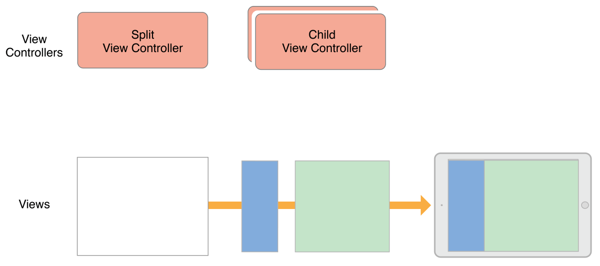

子类化控制器定制
自定义界面UI
官方推荐使用Storyboard文件以可视化方式进行控制器的UI定制,来对应多种尺寸环境,并且方便快速地调整和查看.
处理用户交互
通常,控制器主要处理交互事件方式有三种:
- 由视图指定为Target的动作事件和手势事件
- 系统或者其他对象发送的通知事件处理
- 作为其他对象的数据源和代理事件处理
运行时展示视图
当控制器加载视图后会调用viewWillAppear:方法让控制器知道将要呈现在屏幕上的视图,然后更新视图布局,展示视图到屏幕上,然后就调用viewDidAppear:.
当动态地添加,删除或修改视图时需要对应地进行约束布局调整.
管理视图布局
当控制器上视图的约束布局变化时,UIKit会通知这些变化的发生,并允许在几处关键的响应过程进行额外的处理工作.
- 更新控制器和视图的trait collections,
- 调用控制器的
viewWillLayoutSubviews - 对当前UIPresentationController 对象调用
containerViewWillLayoutSubviews - 调用根视图的
layoutSubviews,内部遍历子视图进行调用 - 应用计算后的布局信息到视图
- 调用控制器的
viewDidLayoutSubViews - 调用当前UIPresentationController对象的
containerViewDidLayoutSubviews方法.
管理布局的建议
- 使用Autolayout
- 利用top and bottom layout guides
- 添加移除视图时对于更新约束
- 实现动画时临时移除约束
有效地管理内存
控制器中主要进行内存分配和释放的关键方法.
- init系列的初始化方法: 加载首要的数据
- viewDidLoad: 装载数据,并配置视图内容
- didReceiveMemoryWarning: 释放非首要的数据内存
- dealloc: 释放所有与当前控制器相关的对象内存.
如何实现容器控制器
设计自定义的容器控制器
容器控制器只应该管理自己视图层次上的视图,再让子控制器管理各自的视图层次.
设计容器控制器的注意点
- 明确容器控制器和子控制器各自的作用
- 存在几个同时展示的子控制器
- 子控制器之间的关系
- 子控制器如何添加或移除
- 子控制器尺寸,位置变化的处理
- 容器控制器对子控制器的UI定制
- 容器控制器与子控制器之间的通信方式和事件处理
- 容器控制器的UI定制
以下为系统级容器控制器的例子: NavigationViewController & SplitViewController

Interface Builder配置容器控制器
使用Xcode中UI组件库Container对象,进行子控制器内容视图的占位,加载时同时加载子控制器的视图.
实现自定义容器控制器
实现明确的控制器间子父关系
添加子控制器
- 使用
addChildViewController添加到容器控制器 - 添加子控制器的根视图到容器控制器的视图层次中,限定size和postion
- 调用
didMoveToParentViewController,提供子控制器响应控制器关系改变的机会
1 | - (void) displayContentController: (UIViewController*) content { |
注意: didMoveToParentViewController:方法必须在视图层次变化后调用.
移除子控制器
- 调用子控制器的
willMoveToParentViewController方法,传nil - 移除在容器视图上跟子控制器相关的布局约束
- 移除子控制器视图
- 调用子控制器的
removeFromParentViewController完成子父关系的结束
1 | - (void) hideContentController: (UIViewController*) content { |
注意: 可以在子类的willMoveToParentViewController方法进行额外自定义操作
子控制器间的切换
- 准备进行切换的子控制器
- 切换时改变子控制视图的层次,设置子控制器切换后的frame
- 通知子控制器间切换的完成
1 | - (void)cycleFromViewController: (UIViewController*) oldVC |
管理子控制器的界面更新
切换子控制器时,UIKit自动进行按照默认顺序转发外观方法,若需要实现自定义顺序的转发,需要重写容器控制器shouldAutomaticallyForwardAppearanceMethods方法,返回NO;然后手动调用子控制器的beginAppearanceTransition:animated:和endAppearanceTransition方法来通知子控制器.
1 | -(void) viewWillAppear:(BOOL)animated { |
创建容器控制器的建议
- 让容器控制器只能访问子控制器的根视图
- 子控制器保持对容器控制器的耦合,使用委托代理将事件转发给容器控制器处理
- 在容器控制器中首先使用常规的视图,再去嵌入子控制器的根视图.
代理控制子控制器
容器控制器通常会委托一个或者多个子控制器来进行部分外观的配置,配置的方式可以考虑以下两种:
- 重写
childViewControllerForStatusBarStyle或childViewControllerForStatusBarHidden让子控制器决定顶部状态栏风格 - 使用子控制器的
preferredContentSize属性让其确定自己尺寸.
支持便利性
为了让每一用户即使生理上存在缺陷也能最大程度地使用iOS应用, UIKit的对象默认都accessible,而对控制器仍然在要以下方面保持便利性:
- 确保每个界面元素accessible,比如标签或者按钮等
- 确保每个accessible元素提高准确有效的信息
使用VoiceOver功能
开启VoiceOver功能后,界面光标可以移动到特定的元素进行语音告知,主要通过UIAccessibilityScreenChangedNotification通知和UIAccessibilityPostNotification(,)方法,传入特定的控件元素来实现,在布局变化时使用UIAccessibilityLayoutChangedNotification通知来告知用户.
响应VoiceOver手势
UIKit会寻找在响应者链中法实现相应的手势的方法，成为VoiceOver的焦点。如果没有对象实现了对应的方法，UIKit执行系统默认动作。
监听Accessibility通知
使用默认的通知中心注册为可访问性通知的观察者,如UIAccessibilityAnnouncementDidFinishNotification通知和UIAccessibilityVoiceOverStatusChanged告知用户App的状态变化.
状态的保存和恢复
为了提供App更好的用户体验,iOS控制器提供了App界面状态的存储和恢复功能,即使App在一些特定情况下如内存紧缺,电量不足而中断,能够进行存储配置来记录App退出前界面和数据,保证下次启动App时将中断退出前呈现再给用户.
配置过程
- 1.对需要具有存储功能的控制器赋值restoration identifiers
- 2.在应用启动时创建具有restoration identifiers且被应用中断的控制器对象
- 3.每一个由于存储恢复创建的控制器配置对应数据,保证呈现用户的界面与之前退出的界面一致.
标记需要存储的控制器
设置控制器的restorationIdentifier属性为唯一字符串,默认为nil.并且保证其控制器的所有父控制器也设置了restorationIdentifier,从而使得状态恢复过程中能到从窗口对象开始,一层层查找到需要状态恢复并且呈现在界面上的控制器.
Tip: restorationIdentifier通常设置为控制器类名本身的字符串.
启动时恢复控制器
App启动时,会在AppDelegate中进行具有存储功能控制器需要恢复的定位,并且创建该对象,通过一系列的步骤进行查询和创建.
- 调用
viewControllerWithRestorationIdentifierPath:coder:判断是否存在具有RestorationIdentifier路径的控制器,没有就会返回nil. - 然后调用
application:viewControllerWithRestorationIdentifierPath:coder:查看没有恢复功能的控制器类 - 若果存在具有RestorationIdentifier路径的控制器情况下,系统会在启动过程中通过恢复路径加载这些控制器对象.
若使用Storyboard创建状态恢复控制器的代码示例
1 | + (UIViewController*) viewControllerWithRestorationIdentifierPath:(NSArray *)identifierComponents |
对控制器状态的编码和解码
针对进行状态保存和恢复的对象,系统都会调用当前对象的encodeRestorableStateWithCoder:和decodeRestorableStateWithCoder:方法,来应用到该对象上,通常所做为保存和恢复所引用的数据对象,其子控制器,当前选择的状态以及配置过的视图.
在编码过程中,需要存储控制器的各个状态数据,而在界面控制器中需要恢复控制器的各个状态数据.
对控制器的数据进行编码和解码的代码示例
1 | - (void)encodeRestorableStateWithCoder:(NSCoder *)coder { |
保存和存储控制器的建议
- 不要保留所有控制器的状态,仅考虑必要的最先呈现给用户的控制器
- 避免在恢复过程中对控制器类进行交换
- 使用状态恢复系统推荐的控制器存储恢复方式实现界面的保存和再恢复状态.
参考
View Controller Programming Guide for iOS-Defining Your Subclass